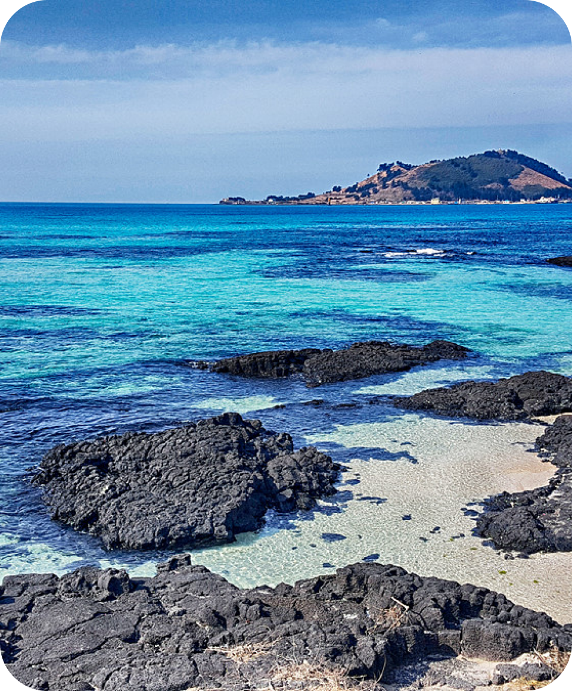

충청
만리포 해수욕장
2개
아름답고 질이 좋은 모래사장과 얕은 수심이 특징적인 곳이다.
원래 만리포는 조선 초기에 중국 사신을 전송하며 '수중만리 무사항해'를 기원하던 것이 유래가 되어
만리장벌로 불리던 데서 지명이 유래했다.
자세히 보기
내 일정 추가
충청
꽃지 해수욕장
1개
넓은 백사장과 할미바위, 할아비바위가 어우러져 그림 같은 풍광을 보여준다.
2개의 바위 너머로 붉게 물드는 낙조는 태안을 상징하는 풍광으로 꼽힌다.
자세히 보기
내 일정 추가

제주
협재해수욕장
3개
제주시 한림읍에 자리하며, 제주올레 14코스의 일부다.
금능해수욕장과 이웃하고 있는 쌍둥이해수욕장이기도 하다.
투명한 물에 에메랄드빛 물감을 서서히 풀어놓은 듯한 바다빛은 보는 것만으로도 힐링이 된다.
썰물 때면 조개껍질이 많이 섞인 은모래빛 백사장이 끝없이 이어진다.
자세히 보기
내 일정 추가